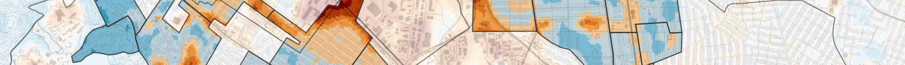

Welcome#

Welcome to the official website for the modules BV300003 Geo-Information (6 ECTS, M.Sc. Cartography) and BGU30062 Geoinformation (5 ECTS, M.Sc. ESPACE) offered by the Chair of Cartography and Visual Analytics at the Technical University of Munich.
Module Description#
The module is structured in Lectures with integrated Exercises.
The Lectures provide the theoretical foundations of geoinformation. They impart knowledge about the concepts of geoinformation, spatial data management and analysis, and cartographic techniques for spatial data visualization.
The Exercises allow the students to employ their theoretical knowledge in applied studies. An introduction to ArcGIS Pro will be given, and the students will be able to analyze and visualize spatial data using a variety of analysis tools and visualization techniques.
The assessment of this module is based 100% on the final closed-book written exam. Students who successfully complete all exercise assignments will receive a bonus. Both the lecture and exercise contents will be covered in the exam. Click here for more information.
Class Schedule#
Lecture: Mondays, 13:15–14:45, Room 0120
Exercise: Mondays, 15:00–16:30,
Room N0199Room 3238
Contact Information#
Course Coordinator:
Zihan Liu, M.Sc. khan.liu@tum.de
Lecturers
Prof. Dr.-Ing. Liqiu Meng liqiu.meng@tum.de
Zihan Liu, M.Sc. khan.liu@tum.de
Dr. rer. nat. Wangshu Wang wangshu.wang@tum.de